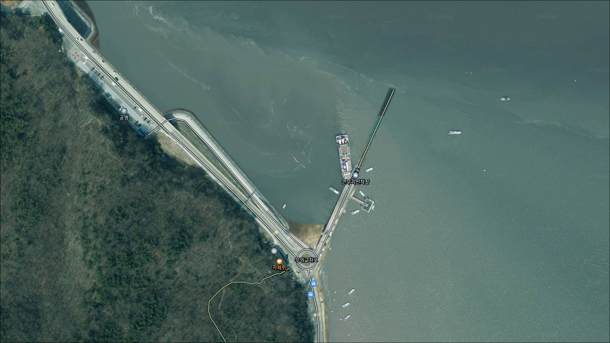
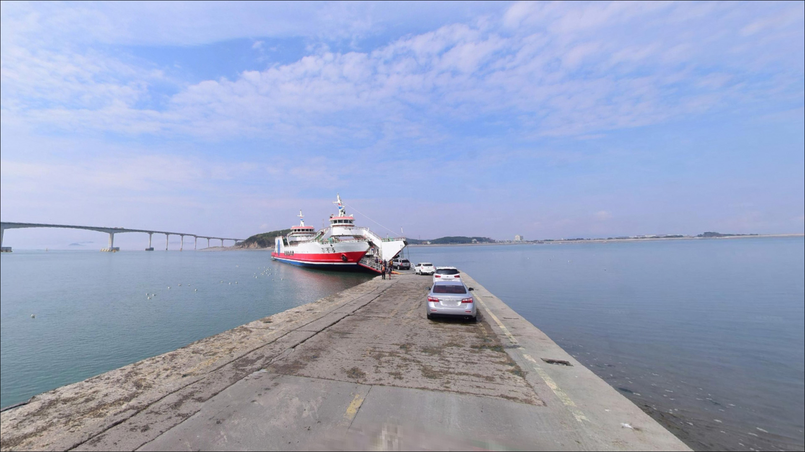
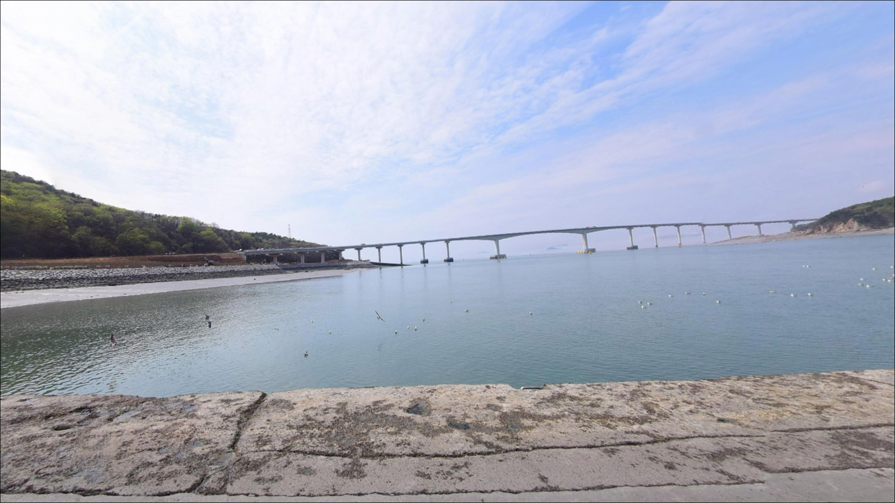
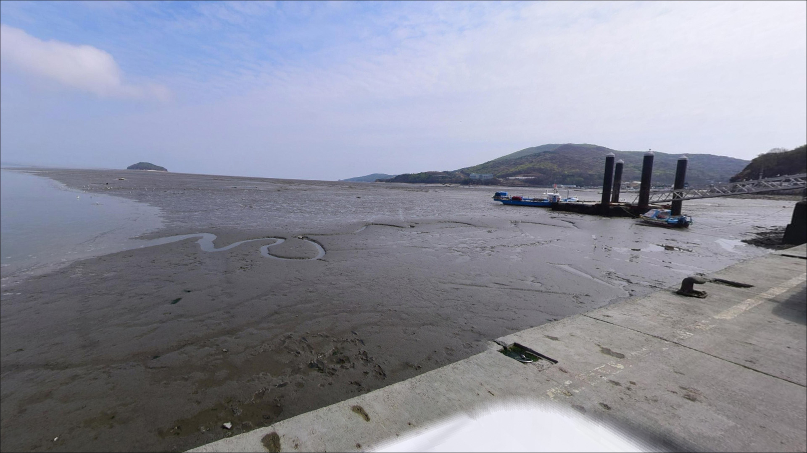
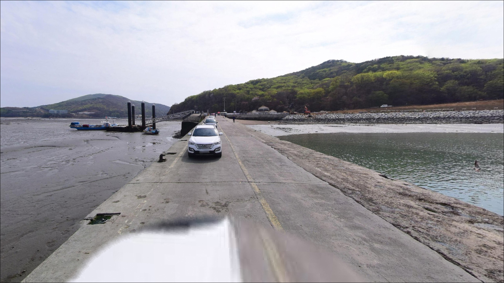
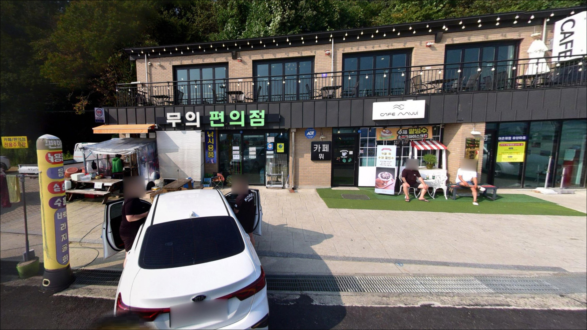
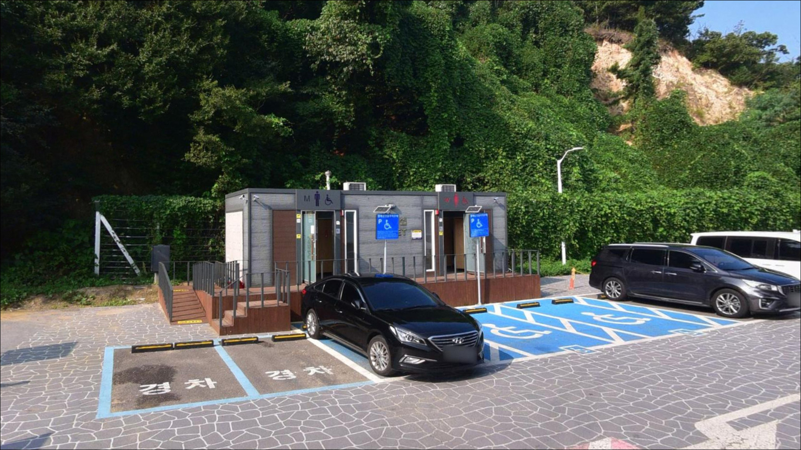
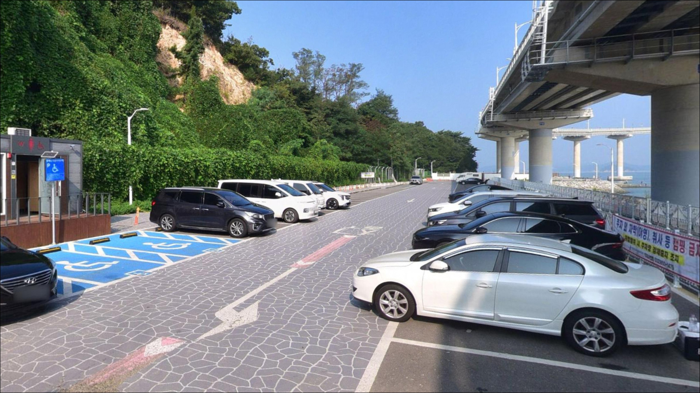
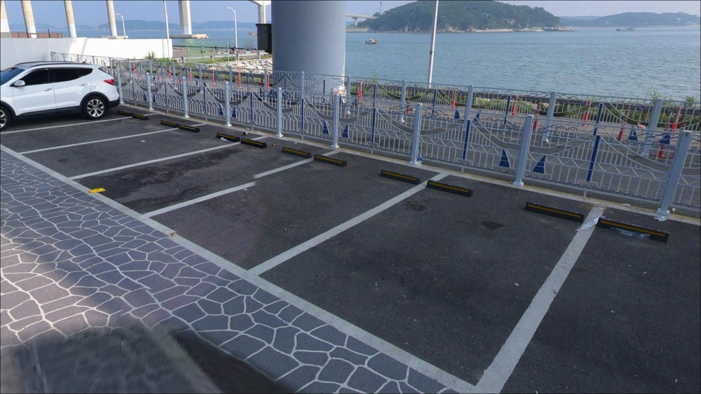

큰무리선착장, 무의도 인천 중구 잔잔한 물결과 어울리는 차박, 낚시 한적한 포인트
이 페이지에는 광고(제휴 링크 포함)가 있으며, 광고 링크를 통해 구매하면 운영자가 판매 수익 또는 수수료를 받을 수 있습니다. 포인트 사진: 카카오맵 스카이뷰·로드뷰. 이 페이지의 지도·사진 이미지는 카카오맵의 실제 서비스 이미지와 다를 수 있습니다.


포인트 안내
큰무리선착장
인천 중구 무의동 298-1
무의대교 아래 수로 구간은
사리 전후 조류가 강해져
어떤 채비를 써도 포인트를 유지하기
어려워지는 지형입니다.
타이밍 없이 진입하면
낚시보다 조류와 씨름하다 철수하게 되는
상황을 맞닥뜨릴 수 있습니다.
잠진도와 대무의도 사이 수로가
선착장 바로 앞에 위치한 구조로,
조류가 집중되는 흐름이 형성됩니다.
조류 방향과 물때를 먼저 읽고
들어가야 이 포인트가 제대로 열립니다.
이 글은 큰무리선착장의
진입 여건, 물때 기반 타이밍 판단,
지형별 낚시 방식에 집중합니다.
조황 단정이나 특정 어종 보장은
이 글의 범위에 포함되지 않습니다.

1. 포인트 위치 및 진입 동선 분석
무의도는 영종도와 무의대교로 연결되어 있어
차량 진입 자체에는 큰 어려움이 없습니다.
영종도에서 잠진도를 거쳐 무의대교를 건너면
바로 큰무리선착장에 닿는 구조입니다.
섬 진입 즉시 도달하는 첫 번째 선착장으로,
진입로는 포장 상태이며 급경사 구간도 없는 편입니다.
무의도 내부 도로는 편도 1차선으로
좁은 구간이 포함되어 있습니다.
승용차나 중형 SUV 기준으로는 진입이 무난하나
대형 차량이라면 사전에 진입로 상태를
확인해두는 편이 좋습니다.
주말이나 트레킹 성수기에는
무의대교 구간부터
차량 정체가 발생하는 경향이 있어
이른 시간 입장이 유리합니다.
주차는 한국관광공사 데이터베이스 기준
주차 가능으로 확인된 포인트입니다.
다만 주말에는 낚시객과 관광객 차량이 몰려
선착장 바로 앞 공간이 부족한 경우가 있습니다.
무의대교 아래쪽 공영주차장을
대안 주차 공간으로 파악해두는 편이
현실적입니다.

2. 차박 환경 평가 및 야간 체류 여건
큰무리선착장은 무의도 둘레길 출발점이자
어촌체험마을과 연계된 관광형 선착장입니다.
관광객과 트레킹객의 유동이 있는 생활권 구조라
완전한 고립형 차박지와는 성격이 다릅니다.
무의대교 조명이 인접해 있어
완전 암흑 환경은 아닐 가능성이 높습니다.
차박을 계획한다면 차 안 체류 중심으로
접근하는 편이 현실적입니다.
어촌체험마을 및 관광지로 운영되는 구간이라
야영·취사 방식에 대한 별도 허가 여부를
사전에 확인해두는 것이 안전합니다.
수로 구간 특성상 야간에
바람이 세지는 경우가 있어
출발 전 기상 예보 확인이 기본 준비입니다.
새벽 물때를 겨냥해 낚시하고
잠시 차 안에서 대기하는 형태가
이 포인트의 성격에 가장 잘 맞습니다.
차박 자체를 메인 목적으로 삼는다면
무의도 권역 내 다른 거점을
함께 검토하는 편이 좋습니다.


3. 주변 편의시설 및 인프라 현황
큰무리선착장 부근에는 화장실이 있습니다.
관광 데이터베이스에서 확인된 정보입니다.
큰무리어촌체험마을과 인접해 있어
기본적인 생활 인프라는 어느 정도 갖춰진 편이며,
선착장 자체는 상시 개방, 연중무휴로 안내됩니다.
반경 3km 수준으로 이동하면
잠진도 방면에 음식점과 카페가 있습니다.
섬 안 편의점 위치는
이 조사에서 확정 정보로 확인하기 어려웠습니다.
무의도 진입 전 영종도나 잠진도 방면에서
식수, 얼음, 낚시 소품을 미리 챙겨
들어가는 편이 안전합니다.
응급 상황 발생 시
영종도 내 의료 시설 방면이
가장 가까운 대응 동선입니다.
무의도는 섬 지역 특성상
비상 약품, 연락처, 연료를
출발 전에 점검하는 것이 기본입니다.

4. 방문 전 준비사항 및 체크 포인트
이 포인트에서 가장 먼저 확인할 것은 물때입니다.
무의대교 아래 수로는
서해 조차의 영향을 직접 받는 지형이라
사리 전후에는 조류가 강해져
채비가 쉽게 밀립니다.
바다타임에서 무의도 인근 조석 정보를 확인하고
조금 전후 또는 정조 타이밍에
입장 시각을 맞추는 것이 기본 전략입니다.
석축과 갯바위 혼합 지형이라
밑걸림이 잦은 편입니다.
원투낚시와 루어 모두
채비 손실이 발생하기 쉬운 환경이므로
여분 채비를 넉넉히 준비하는 것이
낚시 시간을 온전히 쓰는 조건입니다.
야간 낚시를 계획한다면
선착장 구조물과 석축 발판 상태를
낮에 미리 파악해두는 편이 안전합니다.
구명조끼는 반드시 착용하고,
헤드랜턴과 미끄럼 방지 신발도
필수 준비 항목입니다.
선착장 어선 이동 동선 주변에서는
낚시를 피하는 것이 기본 매너입니다.

5. 물때를 모르면 조류에 밀리는 이유
큰무리선착장의 핵심 지형 조건은
무의대교 아래 수로입니다.
잠진도와 대무의도 사이 수로가
선착장 바로 앞에 위치하며,
이 구조가 조류를 집중시키는 역할을 합니다.
조류가 살아 있는 시간대에는
수로 방향으로 채비 흐름을 이용할 수 있는 지형입니다.
선착장 주변은 석축과 갯바위가
혼합된 구조로 추정됩니다.
구조물 경계면 주변으로
수심이 비교적 빠르게 깊어지는 지점이
형성될 가능성이 있습니다.
갯바위 끝단과 석축 직벽 근처는
루어·에깅 자리로 탐색해볼 만한 구간입니다.
바닥은 돌밭이 많은 편으로 추정됩니다.
간조 시 석축 아래 일부 구간이
드러날 수 있으므로
입장 전 현장 수위를 확인하고
자리를 정하는 편이 좋습니다.
수심이 확보되는 만조 전후가
전반적으로 유리한 시간대입니다.
방문 전 최신 조황은 반드시 검색해보시기 바랍니다.


6. 포인트에 어울리는 낚시 스타일
원투낚시는 이 포인트에서
시도해볼 수 있는 기본 방식입니다.
석축이나 갯바위 끝단에서
채비를 수로 방향으로 멀리 던지고
바닥층을 탐색하는 방식이 어울립니다.
바닥이 울퉁불퉁한 구간이 많으므로
봉돌을 바닥에 끌기보다
텐션을 유지하면서 천천히 탐색하는 편이
밑걸림을 줄이는 데 유리합니다.
무의도 권역에서는 망둥어, 노래미, 붕장어가
원투 대상으로 자주 언급됩니다.
루어낚시는 수로 구조에 잘 맞는 방식입니다.
광어를 노리는 다운샷 채비나
지그헤드 웜 계열이 활용도가 높습니다.
교각 인근 물골 방향으로 캐스팅해
수심 변화 구간을 탐색하되,
플로팅보다 바닥층 탐색 방식이
이 지형 조건에 맞습니다.
에깅은 가을 시즌에 맞추면
이 권역에서 시도해볼 만합니다.
주꾸미와 갑오징어는 9월 이후
시즌이 올라오는 경향이 있으며,
무의도 권역 워킹 포인트에서
에깅을 시도한다는 후기가 있습니다.
조류가 강할 때는
무거운 에기로 교체하거나
정조 타이밍까지 대기하는 편이 현실적입니다.
우럭을 노리는 소형 루어 방식도
석축 구조물 주변에서 시도해볼 수 있습니다.
구조물 경계면을 따라 지그헤드나
소형 웜으로 천천히 탐색하는 방식이
이 지형에서 유효한 편입니다.
야간 시간대에는 조명 없이
움직이지 않도록 안전에 주의합니다.

7. 대안 포인트 및 플랜 B 동선
큰무리선착장에 자리가 없거나
조류가 기대보다 강해 낚시가 어려울 때,
무의도 내에서 가장 먼저 이동할 대안은
덕점방파제(광명항 인근)입니다.
원투낚시와 루어 모두 시도한다는 후기가
여러 건 확인되는 포인트로,
방파제 끝단은 루어,
중단은 원투 방식이 어울린다는
경험이 있습니다.
다만 주차가 어렵다는 언급도 있으므로
진입 전 주차 공간을 확인하는 편이 좋습니다.
광명항 방파제는 대무의도 내
지방어항으로 등록된 항구입니다.
방파제에서 낚시를 즐기는 낚시객이 있으며
공영주차장이 있다는 정보도 확인됩니다.
소무의도 방향을 바라보는 구조로,
무의도 내에서 안정적인 대안 포인트입니다.
무의대교를 건너기 전
잠진도 선착장 방면도 대안이 됩니다.
방파제 구조로 원투낚시와
연안 루어를 함께 운용하기 좋은 환경으로
알려져 있어,
큰무리선착장이 기대에 못 미칠 때
부담 없이 이동 가능한 첫 번째 플랜 B입니다.

조류 타이밍을 이해하면
큰무리선착장이 달라 보입니다
원투낚시나 루어낚시를 즐기는 낚시인이라면
큰무리선착장의 수로 지형과
석축·갯바위 혼합 구조는
충분히 공략해볼 만한 조건입니다.
특히 가을 시즌 주꾸미·갑오징어 에깅을
목적으로 한다면
무의도 권역 자체가 이 스타일에
잘 맞는 해역입니다.
반면 물때 없이 사리 전후에 진입하거나
주말 낮 시간에 자리 경쟁이 심한 시기에 방문하면
기대했던 낚시를 즐기기 어렵습니다.
접근성이 좋은 포인트일수록
서두르기보다
타이밍을 맞추는 것이 더 중요합니다.
관광객과 함께 이용하는 공간이라
어선 동선을 먼저 확인하고 자리를 잡는 것이
기본 매너입니다.
새벽 물때를 겨냥해 조용히 낚시하고
돌아오는 패턴이
이 포인트와 가장 잘 맞는 방식이며,
낚시를 마친 뒤 무의도 둘레길을
잠깐 걷는 것도 이 선착장만의 부가적인 매력입니다.